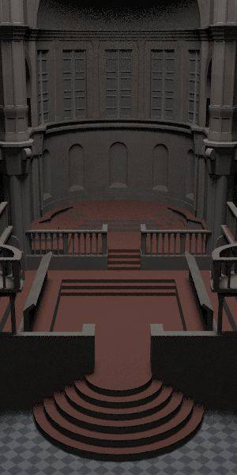

從一般 BVH 架構中，一般都是用 full binary tree，子節點要不 0 個要不 2 個。若有 \(N\) 個 primitive 物件，則表示有 \(N\) 個葉節點放置這些 primitive 物件，而有 \(N-1\) 個內部節點紀錄 Bounding Box 的部分。在測試交點和遍歷走訪的使用上，最慘有一半是多餘計算和走訪，而另一半屬於加速結構。
在論文 Ray Specialized Contraction on Bounding Volume Hierarchies 中，企圖想要利用 generic tree 取代一般使用 full binary tree 實作，在不更動 BVH 的效能下，減少運行上較沒用的內部節點，用以提升遍歷走訪效能，以及提升內存快取的效率。
降低內部節點步驟如下所示：
從實作中，在步驟 2. 約略可以減少 \(25\%\) 的節點，在記憶體方面的影響量沒有太大影響，節點紀錄資訊也增加 (sizeof(struct Node) 相對地大上許多)。
在步驟 3. 中，根據 pbrt-v2 的架構，加速結構能取得的場景資訊並不容易竄改，大部分的類別函數都是 const function()，意即無法變動 object member 的值，但針對指向位址的值可以改變。這類寫法，猜想所有加速結構都是靜態決定，在多核心運行時較不會存在同步 overhead 的影響。
在此，換成另外一種修改方案，在 pbrt-v2/core/scene.h 的 bool Scene::Intersect(...) 函數中加入 aggregate->tick();。利用 aggregate->tick(); 這個函數，大部分呼叫都沒有更動樹狀結構。當呼叫次數 \(T\) 達到一定次數時，加速結構會進行大規模的結構調整。
根據 pbrt rendering 的步驟，儘管不斷地測試或者是估計 \(T\) 要設定的值，都無法接近全局的取樣評估，其中最大的原因是取樣順序和局部取樣調整，從理論上得知不可能會有比較好的結果。這樣的寫法提供簡便的方案去統計 pbrt 運算時較有可能的 ray 從哪裡射出，不用挖掘所有的不同類型 ray 進行取樣。
最後，修改檔案如下：
.
├── accelerators
│ ├── bvhcontract.cpp
│ └── bvhcontract.h
└── core
├── api.cpp
├── primitive.cpp
├── primitive.h
└── scene.hcore/api.cppPrimitive *MakeAccelerator(const string &name,
const vector<Reference<Primitive> > &prims,
const ParamSet ¶mSet) {
...
else if (name == "bvhcontract")
accel = CreateBVHContractAccelerator(prims, paramSet);
...
}core/primitive.hclass Primitive : public ReferenceCounted {
public:
...
// MORRIS ADD
virtual void tick();
...
protected:
...
};core/scene.hclass Scene {
public:
// Scene Public Methods
bool Intersect(const Ray &ray, Intersection *isect) const {
...
aggregate->tick();
...
}
};在 Full binary tree style - BVH 實作中，利用前序走訪分配節點編號範圍 \([0, 2N-1]\)，因此節點編號 \(u\) 的左子樹的編號為 \(u+1\)，只需要紀錄右子樹編號 secondChildOffset，這種寫法在空間和走訪時的快取都有效能改善。在標準程序中也單用迭代方式即可完成，不採用遞迴走訪，減少 push stack 的指令。
在 Generic tree 版本中，基礎節點紀錄架構如下：
struct LinearTreeNode {
// node link information
uint32_t parentOffset;
uint32_t childOffsetHead, childOffsetTail;
uint32_t siblingOffsetNext, siblingOffsetPrev;
// faster record
uint32_t numChild;
// node data
TreeData e;
uint32_t visitCount;
};在原生 BVH 求交點寫法中，根據節點的 Split-Axis 以及 Ray 的方向決定先左子樹還是先右子樹走訪，藉以獲得較高的剪枝機率。但全部先左子樹走訪的快取優勢比較高 (因為前序分配節點編號)，反之在 Split-Axis 有一半的機率走會走快取優勢不高的情況，在權衡兩者之間。
然而在 Generic Tree 實作上，若要提供 Split-Axis 則需要提供 childOffsetTail 和 siblingOffsetPrev 兩個指針，則多了兩個紀錄欄位，單一節點大小從 sizeof(LinearBVHNode) = 32拓展到 sizeof(LinearBVHContractNode) = 60，記憶體用量整整接近兩倍。從 Contract 算法中，節點個數保證無法減少一半，推論得到在 Contract 後記憶體用量會多一些。
走訪實作上分成遞迴和迭代兩種版本，遞迴在效能上會卡在 push esp, argument 等資訊上，而在迭代版本省了 call function overhead 和空間使用，但增加計算次數。而在我撰寫的版本中，還必須 access 父節點的資訊決定要往 siblingOffsetNext 還是 siblingOffsetprev，因此快取效能從理論上嚴重下滑。
遞迴和迭代走訪寫法如下：
void recursiveTraverse(LinearTreeNode *node, LinearTreeNode *_mem) {
// proess
uint32_t offset = node->childOffsetHead;
if (offset == -1)
return ;
for (LinearTreeNode *u; offset != -1; offset = u->siblingOffsetNext) {
u = &_mem[offset];
recursiveTraverse(u, _mem);
}
}void iteratorTraverse(uint32_t offset, LinearTreeNode *_mem) {
bool process = true;
while (offset != -1) {
LinearTreeNode *node = &_mem[offset];
if (process) {
// process
}
if (node->childOffsetHead != -1 && process) {
offset = node->childOffsetHead;
process = true;
} else if (node->siblingOffsetNext != -1) {
offset = node->siblingOffsetNext;
process = true;
} else {
offset = node->parentOffset;
process = false;
}
}
}| sizeof(LinearTreeNode) bytes \ Traversal | Recursive | Loop |
|---|---|---|
| 32 | 6.049s | 5.628s |
| 44 | 6.651s | 6.817s |
| 60 | 7.460s | 6.888s |
| 92 | 9.361s | 9.271s |
| 156 | 16.844s | 16.694s |
| 220 | 25.294s | 27.031s |
| 284 | 28.181s | 30.900s |
| 540 | 28.560s | 33.707s |
| sences \ BVH policy | Native | Contract(loop) | Contract(recursive) | Node Reduce |
|---|---|---|---|---|
|

sibenik.pbrt
|
7.000s | 10.502s | 9.411s | 99576 / 131457 |
|
yeahright.pbrt
|
12.297s | 14.638s | 14.210s | 288707 / 376317 |
|
sponza-fog.pbrt
|
16m36.037s | 21m09.960s | 20m12.012s | 91412 / 121155 |
Ray Specialized Contraction on Bounding Volume Hierarchies, Yan Gu Yong He Guy E. Blelloch